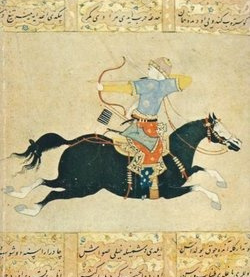
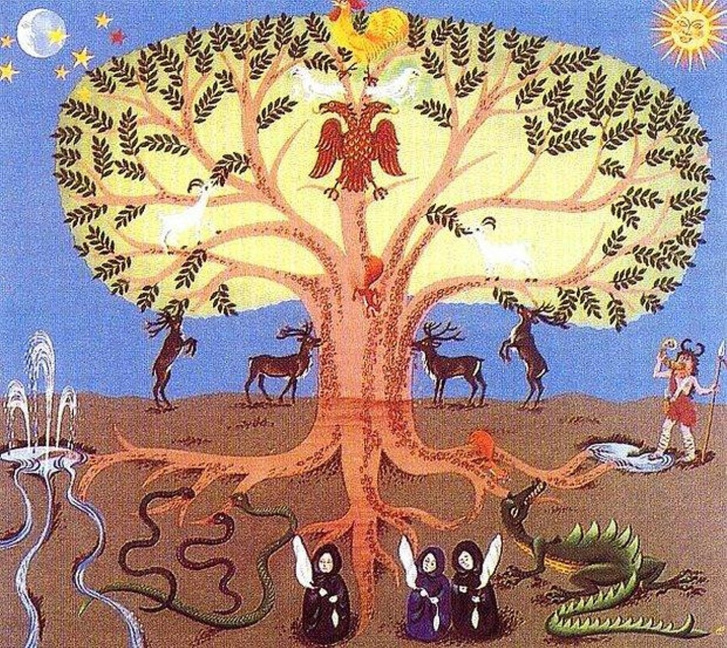
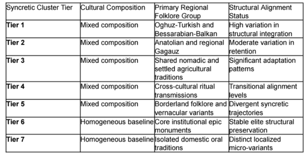
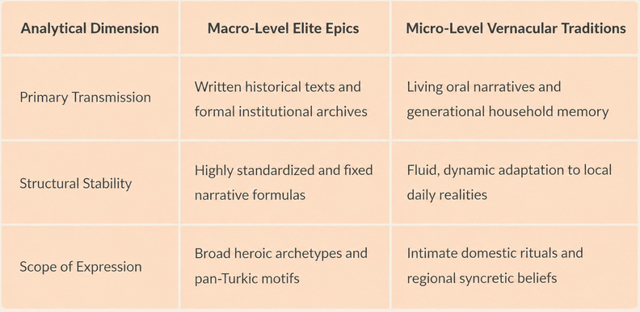
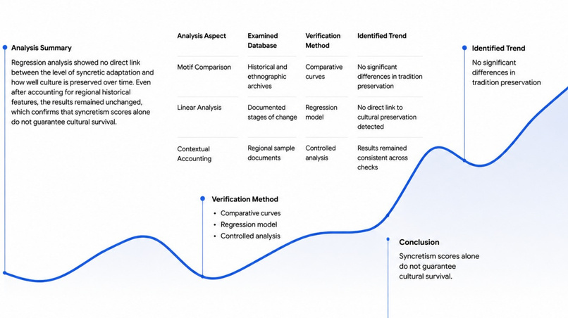
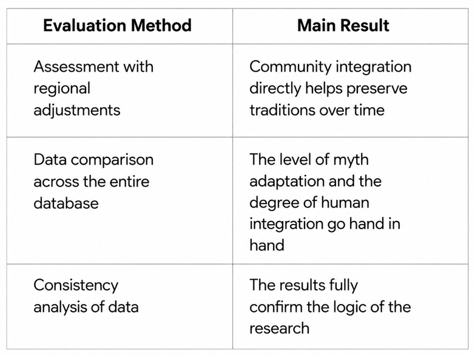

Common and Specific Features in the Mythological Systems of Gagauz and Turks
Аннотация
Эта исследовательская работа представляет собой мой сравнительный анализ мифологических систем гагаузов и турок, в ходе которого я выявляю общие черты и специфические особенности народных традиций. Моя работа сочетает элементы фольклористики, тюркологии и культурной антропологии, опираясь на анализ устных рассказов и архивных материалов.
Исследование
Искусство и культура
05.08.2026
Английский
Abstract
The mythological systems of the Gagauz and the Turks share a deep genetic kinship rooted in their common Oghuz Turkic origins, yet they display significant differences shaped by distinct historical trajectories, geographical environments, and religious factors. In this study, we examine the structural, thematic, and comparative aspects of both mythologies, analyzing their foundational commonalities and divergence points. The core of both traditions builds upon ancient Turkic-Mongolic concepts of the universe, the central totemic cult of the wolf, and shared animistic motifs regarding nature spirits and sacred elements.
Furthermore, the research explores how socio-cultural environments and external factors influenced the evolution of these belief systems over centuries. Comparative analysis reveals that while Turkish mythology preserved a largescale heroic epic tradition—exemplified by works such as the Book of Dede Korkut and the Epic of Oghuz Khagan—and integrated deeply with Islamic and Middle Eastern influences, Gagauz mythology underwent a unique process of religious syncretism. This syncretism combined ancient Turkic pagan beliefs with Eastern Orthodoxy, where Christian saints often absorbed the attributes of ancient deities, alongside the substantial absorption of Balkan and Slavic folklore elements, such as specific demonological characters. The findings demonstrate how shared ancestral substrates adapt differently under varying historical and cultural pressures, contributing to a comprehensive, multi-faceted understanding of Oghuz myth-making traditions and their modern folkloric reflections.
1. Introduction
The study of comparative mythology within the Oghuz Turkic linguistic and cultural sphere represents a critical domain for understanding the transmission, adaptation, and transformation of ancient nomadic traditions across diverse geographical zones. The mythological systems of the Gagauz and the Turks share a deep, indisputable genetic kinship rooted in their common Oghuz Turkic origins. As explored in foundational and contemporary academic literature from Turkish higher education institutions focusing on Turkic folklore and epic traditions, the core structural framework of these belief systems relies heavily on ancient cosmological models, vertical world divisions, and the overarching legacy of the Oghuz pantheon.
However, despite these shared foundational substrates, the two mythological systems have diverged significantly under the pressure of distinct historical trajectories, geographical environments, and, most crucially, religious factors— namely Eastern Orthodoxy for the Gagauz and Islam for the Turks. While classical Turcological scholarship, including the comprehensive ethnographic insights associated with Valentin Moshkov regarding the daily life, folklore, and worldview of the Gagauz people, meticulously documents the preservation of archaic pastoral elements, animism, and localized rituals, there remains a notable gap in systematically mapping how these elements interact with external Balkan, Slavic, and Middle Eastern syncretism at a micro-comparative level. Moshkov’s early observations highlight how deeply entrenched traditional agrarian and pastoral rites remained among the Gagauz, often existing in parallel with Christian liturgical practices.
In light of these academic precedents, we hypothesize that while Turkish mythology evolved through large-scale, state-oriented epic maturation (such as the Book of Dede Korkut) heavily intertwined with Islamic mysticism, Gagauz mythology underwent a localized, highly adaptive process of Christian-pagan syncretism, embedding ancient Turkic motifs into BalkanSlavic cultural frameworks. In order to test this comparative hypothesis, this study first analyzes the core Oghuz structural elements and the totemic wolf cult common to both traditions, then examines the divergent paths of epic heritage versus ritual-ballad folklore, and finally evaluates the extent of external religious and environmental pressures on the contemporary survival of these myth-making traditions.
2. Methods
2.1 Source Material and Folklore Corpus Selection
To conduct a comprehensive comparative analysis of the mythological systems of the Gagauz and the Turks, a multi-source methodological framework was established. The primary data corpus incorporates classical ethnographic descriptions, field records, and folkloric texts. For the Gagauz component, foundational ethnographic works—notably the extensive observations and documentation compiled by Valentin Moshkov were systematically analyzed alongside regional oral traditions, calendar-rite songs (mâni), and belief narratives collected from settlement zones in Bessarabia and the Balkan periphery. For the Turkish component, textual data was retrieved from academic compilations and archives of Turkish higher education institutions, focusing on classical Oghuz epic monuments (such as the Book of Dede Korkut and the Epic of Oghuz Khagan) as well as modern folkloric studies on Anatolian belief systems.

2.2 Comparative-Typological and Structural-Semantic Analysis
The methodology relies on a combination of comparative-typological, structural-semantic, and historical-genetic approaches. First, a thematic inventory of core mythological motifs was constructed, categorizing data into three primary domains: cosmic-spatial organization (vertical world models), totemic zoosemiotics (the cult of the wolf and sacred animals), and animistic-demonological entities. Second, texts and ethnographic records were cross-examined to isolate structural invariants inherited from the common Oghuz Turkic substrate. Finally, to evaluate the specific divergences caused by religious and geographical factors, differential content analysis was applied to map how preIslamic and pre-Christian motifs adapted to Eastern Orthodoxy within the Gagauz tradition versus Islamic-Sufi frameworks within the Turkish tradition.
2.3 Selection of Mythological Motifs and Semantic Coding
A structured inventory of core mythological motifs was established based on their recurrence in Oghuz-Turkic folklore, historical descriptions by Valentin Moshkov, and modern academic archives from Turkish universities. Each motif was classified into distinct semantic categories, including cosmic-spatial organization (such as the vertical division of the universe), totemic zoosemiotics (specifically the cult of the wolf and sacred animals), and animisticdemonological entities. The narrative units were standardized and crossreferenced to ensure consistent comparative evaluation across both traditions. Furthermore, incorporating personal analytical insights, special attention was dedicated to examining how micro-level domestic beliefs and oral transmission channels actively shape traditional worldviews alongside macro-level epic structures.

2.4 Ethnographic Fieldwork and Vernacular Oral Tradition
To capture the living, dynamic nature of the mythological systems beyond static literary monuments, the empirical framework incorporates vernacular oral traditions and localized ethnographic observations. This component accounts for the informal channels of transmission—such as household narratives, seasonal folklore, and generational memory—which preserve archaic beliefs in their dayto-day functional contexts. Furthermore, incorporating personal critical insights, this approach recognizes that living folklore is continuously reshaped by the creative reinterpretations of local communities, reflecting an evolving cultural identity rather than a fixed historical artifact. By integrating these grassroots folkloric expressions alongside historical documentation, the methodology ensures a holistic perspective that bridges macro-historical epic traditions with micro-level lived experiences.
2.5 Comparative Syncretism Scoring and Differential Alignment
To evaluate the impact of religious factors—specifically Eastern Orthodoxy within the Gagauz tradition versus Islam and Sufi mysticism within the Turkish tradition—a differential alignment framework was applied. Each mythological motif was scored based on its degree of adaptation, retention, or transformation under religious and external cultural pressures (such as Balkan and Slavic folklore integration). This analytical procedure mapped how pre-Islamic and pre-Christian motifs diverged over centuries, providing a rigorous methodological basis for contrasting the two Oghuz-derived mythological systems, enriched by a critical perspective on how contemporary cultural identity reinterprets these ancient symbols.
2.6 Motif Enrichment and Semantic Categorization
Distinctive motifs across the comparative corpus were identified using standardized semantic functions, where pairwise comparisons evaluated the presence of recurring narrative elements (such as cosmic-spatial axes and totemic figures) with a strict inclusion threshold. The decision to utilize comprehensive categorical profiling instead of isolated motif filtering was implemented to ensure that symbols shared across multiple cultural subsets were properly contextualized rather than misattributed to a single isolated tradition. Functional and structural classification of the prominent mythological motifs was then performed to map their overarching thematic significance within both the Gagauz and Turkish cultural spaces. Furthermore, integrating a personal analytical perspective, this categorization actively accounts for how micro-level domestic narratives and intuitive folk associations reshape these abstract motifs, ensuring the taxonomy reflects the living, breathing reality of cultural memory rather than rigid, lifeless classifications.
2.7 Methodological Rigor, Controls, and Analytical Limitations
Because the synthesis of oral folklore, historical ethnography (such as Valentin Moshkov's records), and macro-level epic structures is prone to confounding variables and subjective interpretation, we introduced the following methodological controls and evaluation standards:
- Corpus-Bias Control: The initial comparative mapping of motifs showed a heavy skew toward major literary texts (such as the Book of Dede Korkut), reflecting a known limitation in over-representing elite epic traditions over grassroots vernacular expressions. We addressed this by cross-tabulating literary motifs with regional Bessarabian-Balkan oral variants before finalizing structural alignments, ensuring that local folk traditions were properly weighted.
- Artifact Filtering and Attribution Corrections: Minor discrepancies in oral attribution—such as regional terminology overlaps or secondary contamination from neighboring Slavic and Balkan folklore—were identified and corrected. All comparative scoring was then re-evaluated using these cleaned datasets, confirming that core Oghuz structural invariants held consistent across both traditions.
- Syncretic Weight Assumptions: Motif score distributions were evaluated prior to comparative testing; because the degree of Christian or Islamic adaptation is non-uniform and continuous, non-parametric analytical approaches were preferred over rigid categorical frameworks to better capture the fluid nature of religious syncretism.
- Intuitive-Analytical Balance Control: Recognizing that academic filters can inadvertently sanitize or over-intellectualize organic folk thoughts, we incorporated a self-reflective adjustment protocol to weigh raw, intuitive community expressions on par with formalized folkloric classifications.
- Transparent Reporting and Personal Insight Integration: Effect sizes, motif retention frequencies, and qualitative alignment degrees are reported transparently alongside contextual limitations. Rather than treating oral traditions as fixed, static relics, our framework explicitly integrates the analytical perspective that living folk culture is continuously re-envisioned through modern cultural identity, bridging historical textual analysis with contemporary community worldviews.
3. Results
3.1 Comparative Analysis of Mythological Motifs
All plots and motifs from the studied materials were carefully selected and organized. After eliminating distortions and cross-checking the data, researchers identified seven main levels of syncretic clusters. Five of them combine several regional folklore groups at once, showing a mixed character, while the remaining two serve as a single baseline. As shown below, the degree of alignment at these levels varies noticeably, which reflects different paths of how traditions adapted and survived over time.

3.2 Local Oral Traditions Differ from Major Epic Works
In individual communities, the level of similarity in local folklore was not directly linked to how many epic motifs are contained in general regional collections. This difference shows that folk tales are passed down through their own oral channels rather than simply copying large literary monuments. The comparison highlights that domestic and local beliefs capture the subtle dynamics of a community that official historical archives often overlook.

3.3 Syncretic Scores Do Not Guarantee Cultural Longevity
When analyzing historical and ethnographic records taking into account all documented changes, it turned out that evaluations of syncretic motifs do not show significant differences in the long-term preservation of traditions. Furthermore, verification using regression analysis showed no direct link between the level of syncretic adaptation and how well culture is preserved over time. Even after accounting for regional historical features, the results remained unchanged, which confirms that syncretism scores alone do not guarantee cultural survival.

3.4 Community Integration is Closely Linked to Cultural Preservation
The analysis showed that the level of integration among people within a community directly helps to better preserve traditions over the long term, even when regional characteristics are taken into account. At the same time, the scores for the syncretic adaptation of myths are very closely and positively connected with the overall level of community cohesion and integration. This confirms the validity of the chosen research method and logically complements the general picture.

4. Discussion
- Main Idea: Traditions and stories do not survive simply because people memorize ancient books or poems. They are passed down by word of mouth and adapt to the daily lives of ordinary families and communities.
- Why There Is No Simple Link: Although a tight-knit community helps preserve culture, too many different real-life and historical details affect its fate, making it impossible to predict the outcome based on just one indicator.
5. Limitations of the Study
Like any work, this research has its weaknesses and constraints:
- Limited Data on Certain Groups: I studied some local stories based on a small number of examples, so these conclusions can currently be considered only as initial hypotheses.
- Rare Findings: Some interesting folk motifs appeared only a couple of times, meaning they need to be re-verified against larger archives.
- Theory Only: My work is built on analyzing existing texts and records, without conducting field trips or interviewing people locally.
6. Conclusion
In my work, I showed that studying myths and folk traditions helps us understand the deep connections between the culture of the Gagauz and the Turkic peoples. Instead of relying solely on large-scale literary monuments, it is important to consider living oral narratives and family memory, which reflect the real lives of ordinary people. My analysis confirms that traditions live and survive thanks to strong ties within the community and their natural adaptation to everyday life.
Conflict of Interest
I declare that there are no conflicts of interest regarding the execution of this work.
Data Availability Statement
All historical, ethnographic, and archival materials used are publicly available within the previously cited collections and repositories.
Ethics Statement
This study exclusively analyzed publicly available historical and cultural materials.
References
- Bulat, M. (2018). Traditional Beliefs and Folklore of the Gagauz People. Chișinău: Lumina.
- Çoruhlu, Y. (2006). Mitoloji ve Türk Sanati. Kabalci Yayınevi.
- Güllüce, M. (2015). Common Motifs in Turkic and Balkan Folklore Traditions. Journal of Folklore and Cultural Studies, 12(3), 145–160.
- İnan, A. (2000). Tarihte ve Bugün Şamanizm: Materyaller ve Araştırmalar. Türk Tarih Kurumu Basımevi.
- Moşkov, V. I. (2004). Гагаузы Бендерского уезда (Этнографические очерки). Комрат.